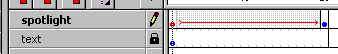

Spotlight


 Downloadable FLA
Downloadable FLA
It's easy to create a spotlight in Flash, and useful. Read here. We will now create a spotlight, scrolling horizontally over some text.
Step 1. Create a layer with some text. Name the layer text.
Step 2. Create a layer with an object, the shape of which you want the spotlight to have. Name the layer spotlight.
Step 3. Drag the spotlight layer to the top layer level.

Step 4. Animate the spotlight symbol the way you usually animate, using motion tweening. The animation, will be the path, the spotlight will follow - I suggest you "enlight" the entire piece of text.
Step 5. Click the pencil in the layer. Now click "Mask".
C'est tout!